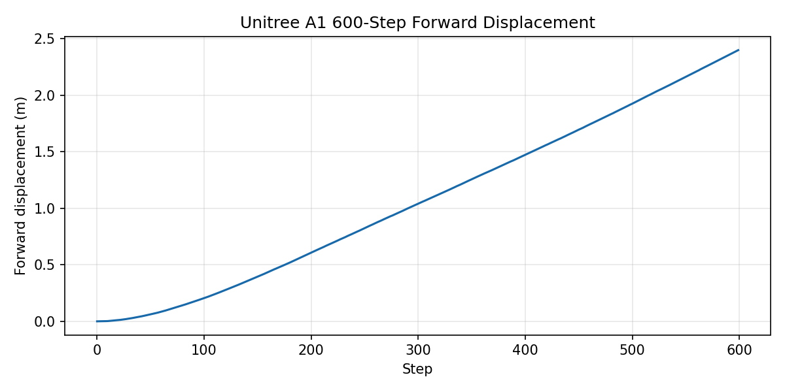
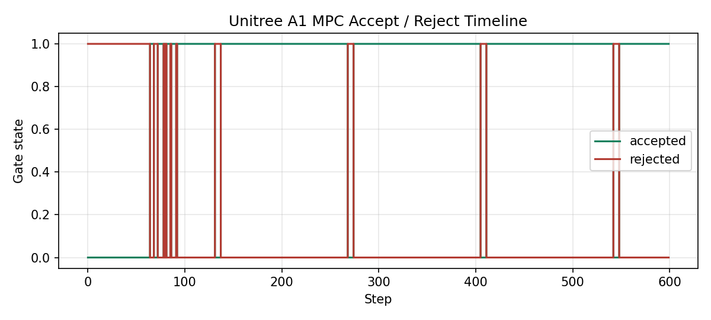
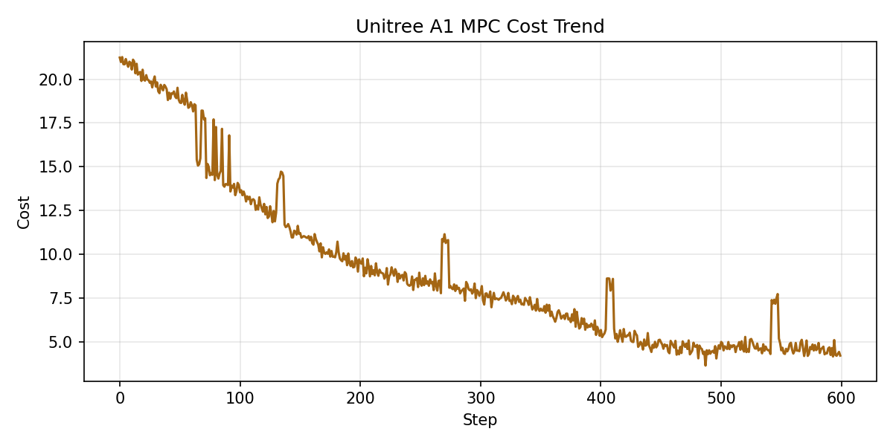

Unitree A1 仿真控制展示
Unitree A1 在 Isaac Lab 中的仿真控制项目：围绕 PPO + MPC，从站立稳定到短时域行走验证，完成日志解析、accept-reject 诊断、cost trend 与图表分析。
核心指标
Unitree A1Isaac Lab 仿真对象
600 steps短时域验证窗口
+0.9338 mPPO 策略 600 step 前向位移
+0.9339 mHardcoded baseline 对照位移
+0.7915 mMPC defaults 参数对照位移
~872 step长时域共同失败窗口（后续优化方向）
16 次训练系统排错；关键发现 mpc_rate_div 6→1
已核实毕设指标
表 A1-1：短时域结果
| 控制器 | 600 步前向位移 | 说明 |
|---|---|---|
| PPO model_298 | +0.9338 m | corrected replay |
| 硬编码 diagonal-trot 基线 | +0.9339 m | 手写基线 |
| MPC defaults | +0.7915 m | 参数对照 |
表 A1-2：关键实验对照
| 实验 | 存活步数 | 关键指标 | 结论 |
|---|---|---|---|
| 600 步验证 | 600 | PPO≈基线 | 短时域验证通过 |
| 1200 步压力测试 | 约 872 | 策略与基线均失败 | 共享控制栈问题，非单纯 RL 问题 |
| yaw-anchor 单次实验 | 1199 | accept 164/1199 | 判失败分支，活得久≠活得好 |
以上为毕设实测指标的文字引用；本页面图表仍来自公开仓库的 synthetic demo artifacts，不与实测数字混作同一数据源。
毕设仿真回放
Hardcoded baseline
Isaac Lab simulation replay (2026-04, thesis scope) — hardcoded diagonal-trot baseline，对应表 A1-1 的 +0.9339 m。
PPO policy
Isaac Lab simulation replay (2026-04, thesis scope) — PPO model_298，对应表 A1-1 的 +0.9338 m。
展示图表
Forward displacement

600 step 前向位移曲线，对比 PPO 策略与 hardcoded baseline 的短时域行走表现。
MPC accept / reject

accept/reject 统计用于观察控制候选轨迹的筛选节奏，辅助定位行走窗口中的稳定性变化。
Cost trend

cost trend 展示优化目标随 step 的变化，用于分析控制代价、收敛趋势与异常波动。
这个页面展示什么
数据接口
设计 600 step Unitree A1 轨迹字段，覆盖位移、姿态、速度命令、支撑力、接触状态与 MPC 诊断量。
设计 600 step Unitree A1 轨迹字段，覆盖位移、姿态、速度命令、支撑力、接触状态与 MPC 诊断量。
解析与校验
对 CSV 字段做 schema 检查，缺字段时给出清晰错误。
对 CSV 字段做 schema 检查，缺字段时给出清晰错误。
指标计算
计算前向位移、速度跟踪误差、姿态、支撑力、接触占空比、MPC accept/reject 和 cost trend。
计算前向位移、速度跟踪误差、姿态、支撑力、接触占空比、MPC accept/reject 和 cost trend。
可视化
把解析后的轨迹和诊断量整理成可讲解的图表，支撑项目复盘和面试表达。
把解析后的轨迹和诊断量整理成可讲解的图表，支撑项目复盘和面试表达。
毕设进度
gantt
title Unitree A1 毕设进度
dateFormat YYYY-MM-DD
axisFormat %Y-%m
section 系统搭建
Isaac Lab 环境与 A1 任务搭建 :done, a1, 2025-11-01, 2025-12-15
Windows↔WSL2 TCP bridge :done, a2, 2025-12-01, 2026-01-15
section 控制与训练
站立控制与 gated handoff :done, a3, 2026-01-01, 2026-02-10
diagonal-trot prior + PPO 残差训练 :done, a4, 2026-02-01, 2026-03-20
16 次训练系统排错 :done, a5, 2026-02-15, 2026-04-05
section 毕设验证
600 步 corrected replay 对照 :done, a6, 2026-03-20, 2026-04-10
1200 步压力测试与失败机制定位 :done, a7, 2026-04-01, 2026-04-13
项目状态矩阵
| 模块 | 实现内容 |
|---|---|
| Unitree A1 数据接口 | 整理 Isaac Lab 轨迹字段，覆盖 step、run_id、位移、姿态、速度、接触、支撑力与 MPC 诊断量。 |
| 日志解析与指标 | 实现 CSV schema 校验、跨 run 聚合、前向位移、速度误差、姿态峰值、接触占空比与支撑力统计。 |
| PPO 策略评估 | 围绕 600 step 短时域窗口计算前向位移，并与 hardcoded baseline 做对照分析。 |
| MPC 诊断 | 分析 accept/reject、support force 与 cost trend，定位策略在行走窗口中的稳定性变化。 |
| 长时域鲁棒性 | 记录约 872 step 的共同失败窗口，定位 yaw 漂移、CoM 投影漂移、姿态恢复退化与 frictionCone 成本爆炸链条。 |
| 图表分析 | 生成前向位移、accept/reject、cost trend 等图表，用于项目展示和技术讲解。 |
本地运行
pip install -e ".[test]"
python scripts/generate_sample_data.py
python scripts/parse_logs.py
python scripts/generate_figures.py
pytest
技术栈
Python
pandas
NumPy
matplotlib
pytest
MPC diagnostics
Unitree A1